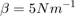

Project by Dinis Rodrigues nº79089 and José Fernandes nº82414
For the 1st Laboratory of MSIM
Contents
- Section 1-> Study of car velocity and position
- Section 1-> Variable Definition
- Section 1-> First case of study: Velocity
- Section 1-> First case of study: Position
- Section 1-> Other Trials: Velocity
- Section 1-> Other Trials: Position
- Section 2->Variable Definition
- Section 2-> Study of Prey and Predator evolution over time
- Section 2-> 2.2
- Section 2-> 2.3
- Section 2-> 2.4 a)
- Section 2-> 2.4 b)
- Section 2-> 2.4 c)
- Section 2-> 2.4 d)
- Section 3 -> Double Pendulum
- Section 3 -> 1 Animation
- Section 3 -> 3.2 Lissajous Curve
- Section 3 -> 3.4
- Functions Used in code
- Selector and Loop Code For Car Program
- Functions for Section 2
- Set function into strings
Section 1-> Study of car velocity and position
Here we evaluate a a physhical model of a car going forward taking in account different values of the contant of time which is given by the friction constant divided by mass
function main
close all; %Load file in system memory file='carro'; load_system(file);
Section 1-> Variable Definition
m=[30 80 10];
beta=[5 10 11] ;
v0=3;
nv0=-v0;
y0=5;
%Set Variables into strings (needed to set model parameters)
v0str=num2str(v0);
nv0str=num2str(nv0);
y0str=num2str(y0);
StopTime='8';
Section 1-> First case of study: Velocity
Giving the mass, , the friction coeficcient  , the initial value of position and its initial velocity , we get
sim_and_plot(m,beta,1,v0str,y0str,nv0str,StopTime,1,file,0); xlim([0 2]); xlabel('Time (s)'); ylabel('Velocity (m/s)'); legend('v_0=3m/s','v_0=-3m/s'); title('Velocity over time');
Giving the theoretical question, we can confirm this
Section 1-> First case of study: Position
Giving the same values as before we get
sim_and_plot(m,beta,1,v0str,y0str,nv0str,StopTime,2,file,0);
xlim([0 2]);
ylim([4 6]);
xlabel('Time (s)');
ylabel('Position (m)');
legend('v_0=3m/s','v_0=-3m/s');
title('Position over time');
Giving the theoretical question, we can confirm this
Section 1-> Other Trials: Velocity
In this section we evaluate the velocity and position for two more different values of and . So and , and making
sim_and_plot(m,beta,3,v0str,y0str,nv0str,StopTime,1,file,1);
Section 1-> Other Trials: Position
In this section we evaluate the velocity and position for two more different values of and . So and , and making
sim_and_plot(m,beta,3,v0str,y0str,nv0str,StopTime,2,file,1); %Load file in system memory file='popul'; load_system(file);
Section 2->Variable Definition
StopTime='4'; N1_init='2'; N2_init='2'; alpha1=1; alpha2=1; legenda1='Predadator (N2)'; legenda2='Prey (N1)'; xaxe='Time (s)'; yaxe='[Predadator (N2),Prey (N1)]'; %Define strings to input into model
Section 2-> Study of Prey and Predator evolution over time
Here we evaluate a physhical model of Prey and Predator populations over time
Section 2-> 2.2
With  we evaluate the different types of evolution considering various values for and
we evaluate the different types of evolution considering various values for and
mod=sim_plot(alpha1,alpha2,'10','0.0001',N1_init,N2_init,file,-1,-1); tittle='Interaction between the two populations with \delta_1 = -1 and \delta_2 = -1'; plot_pop(mod,tittle,legenda1,legenda2,xaxe,yaxe);
and  stagnates
stagnates
mod=sim_plot(alpha1,alpha2,StopTime,'0.0001',N1_init,N2_init,file,-1,0); tittle='Interaction between the two populations with \delta_1 = -1 and \delta_2 = 0'; plot_pop(mod,tittle,legenda1,legenda2,xaxe,yaxe);
and stagnates
mod=sim_plot(alpha1,alpha2,'2','0.0001',N1_init,N2_init,file,-1,1); tittle='Interaction between the two populations with \delta_1 = -1 and \delta_2 = 1'; plot_pop(mod,tittle,legenda1,legenda2,xaxe,yaxe);
and unbalanced
mod=sim_plot(alpha1,alpha2,'10','0.0001',N1_init,N2_init,file,0,-1); tittle='Interaction between the two populations with \delta_1 = 0 and \delta_2 = -1'; plot_pop(mod,tittle,legenda1,legenda2,xaxe,yaxe);
and stagnates
mod=sim_plot(alpha1,alpha2,StopTime,'0.0001',N1_init,N2_init,file,0,0); tittle='Interaction between the two populations with \delta_1 = 0 and \delta_2 = 0'; plot_pop(mod,tittle,legenda1,legenda2,xaxe,yaxe);
and stagnates
mod=sim_plot(alpha1,alpha2,'2','0.0001',N1_init,N2_init,file,0,1); tittle='Interaction between the two populations with \delta_1 = 0 and \delta_2 = 1'; plot_pop(mod,tittle,legenda1,legenda2,xaxe,yaxe);
and unbalanced
mod=sim_plot(alpha1,alpha2,'10','0.0001',N1_init,N2_init,file,1,-1); tittle='Interaction between the two populations with \delta_1 = 1 and \delta_2 = -1'; plot_pop(mod,tittle,legenda1,legenda2,xaxe,yaxe);
and osccilates
mod=sim_plot(alpha1,alpha2,StopTime,'0.0001',N1_init,N2_init,file,1,0); tittle='Interaction between the two populations with \delta_1 = 1 and \delta_2 = 0'; plot_pop(mod,tittle,legenda1,legenda2,xaxe,yaxe);
and stagnates
mod=sim_plot(alpha1,alpha2,'2','0.0001',N1_init,N2_init,file,1,1); tittle='Interaction between the two populations with \delta_1 = 1 and \delta_2 = 1'; plot_pop(mod,tittle,legenda1,legenda2,xaxe,yaxe);
and unbalanced
Section 2-> 2.3
To confirm equilibrium we need to assure that and , so ploting the case where the populations osccilate i.e for every  with
with
n1V=[1 2 3 4 5 6];
n2V=[1 2 3 4 5 6];
[X,Y]=meshgrid(n1V,n2V);
figure
for k=1:6
for j=1:6
mod=sim_plot(alpha1,alpha2,'10','0.0001',X(k,j),Y(k,j),file,1,-1);
N2p=mod.get('dataN2');
N1p=mod.get('dataN1');
plot(N1p,N2p,'linewidth',2);
hold on;
xlabel('N2 Population');
ylabel('N1 Population');
title('Phase Space with \delta_1 = 1 and \delta_2 = -1','Interpreter','tex');
end
end
mod=sim_plot(alpha1,alpha2,'10','0.0001',1,1,file,1,-1);
N2p=mod.get('dataN2');
N1p=mod.get('dataN1');
plot(N1p,N2p,'x','linewidth',2);
grid on;
grid minor;
hold off

Marked with X is the point of equilibrium, in this case is with and
Section 2-> 2.4 a)
Here we plot presas.mat togeter with our best guess of values for the predadotr evolution
mod=sim_plot(1.4,0.71,'20','0.0001','4','1.47',file,3.1,-1.5); %plot_pop(mod,tittle,legenda1,legenda2,xaxe,yaxe); prey=load('presas.mat'); h=plot(prey.tr,prey.yr,'linewidth',2); N1=mod.get('dataN1'); clk=mod.get('clock'); hold on; h1=plot(clk,N1,'linewidth',2); grid on; grid minor; xlabel('Time (s)'); ylabel('N1 Population'); title('Approximation by visual guidance','Interpreter','tex'); legend([h,h1],'N1 given by file','N1 by visual approximation'); hold off
We can see by the maximum values of presas.mat that our values for the predadator function are a good estimate of the real ones
Section 2-> 2.4 b)
%Get linear spaced values for variables (400 iterations using 20 by 20 linear spaced) alpha2_t=linspace(0.68,0.72,20); N2_t=linspace(1.58,1.62,20); [X,Y]=meshgrid(alpha2_t,N2_t); %Z matrix contains the total error for each point of the grid Z = error_matrix(alpha2_t,N2_t); %Plot mesh figure h=figure; create_mesh(h,X,Y,Z); %made by righ clicking the figure (../get code) because i rotated it to get a better view %Get the min error value and index I=find(Z==min(min(Z))); Zmin=min(min(Z)); N2_init=num2str(Y(I)); alpha_2=num2str(X(I)); %Plot both prey evolution plot mod=sim_plot(1.4,alpha_2,'20','0.0001','4',N2_init,file,3.1,-1.5); N1=mod.get('dataN1'); clk=mod.get('clock'); figure %plot presas.mat h=plot(prey.tr,prey.yr,'linewidth',2); hold on; %plot sim and label h1=plot(clk,N1,'linewidth',2); xlabel('Time (s)'); ylabel('N1 Population'); title('Approximation by brute force','Interpreter','tex'); legend([h,h1],'N1 given by file','N1 by approximation'); grid on; grid minor; hold off; %Get min value of error and point X,Y N2_init=num2str(Y(I)); alpha_2=num2str(X(I)); Zmin_str=num2str(Zmin); message=sprintf('By this method, using 400 iterations we get N(0)=%s and alpha_2 =%s as our best values for aproximation, with a total error of %s',N2_init,alpha_2,Zmin_str); disp(message);
By this method, using 400 iterations we get N(0)=1.5968 and alpha_2 =0.70105 as our best values for aproximation, with a total error of 9.9726
Using brute force iterations we see that we can get a really good approximation. But if we didnt knew the interval on where alpha2 and N2init were, we would get much more iteration. This method is not viable (continue)
Section 2-> 2.4 c)
Optimization usig fminsearch
%x0 = initial values to begin optimization algorithm, fminsearch returns %the solution fval (error in our case), x(1) and x(2) corresponding to %N2_init and alpha_2 x0=[0.68;1.58]; options=optimset('Display','final'); [x,fval,exitflag,output]=fminsearch(@algorithm1,x0,options); %get number of iterations it needed to find the min value iterations=output.iterations fval_str=num2str(fval); message=sprintf('By this method using 28 iterations we get N(0)=%s and alpha_2 =%s as our best values for aproximation, with a total error of %s',x(2),x(1),fval_str); disp(message); %plot both prey evolution plots N2_init=num2str(x(2)); alpha_2=num2str(x(1)); mod=sim_plot(1.4,alpha_2,'20','0.0001','4',N2_init,file,3.1,-1.5); N1_f=mod.get('dataN1'); clk_f=mod.get('clock'); figure h=plot(prey.tr,prey.yr,'linewidth',2); hold on h2=plot(clk_f,N1_f,'linewidth',2); xlabel('Time (s)'); ylabel('N1 Population'); title('Approximation using optimization algorithm','Interpreter','tex'); legend([h,h2],'N1 given by file','N1 by approximation'); grid on; grid minor; hold off; result=Zmin-fval; if result<0 message=sprintf('Brute force iteration gives a better result with a difference of %f on the total error',result); elseif result > 0 message=sprintf('fminsearch gives a better result with a difference of %f on the total error',result); else message=sprintf('Both methonds give the same result, given the %f difference on the total error',result); end
Optimization terminated:
the current x satisfies the termination criteria using OPTIONS.TolX of 1.000000e-04
and F(X) satisfies the convergence criteria using OPTIONS.TolFun of 1.000000e-04
iterations =
28
By this method using 28 iterations we get N(0)=1.598157e+00 and alpha_2 =7.012891e-01 as our best values for aproximation, with a total error of 9.9689
Section 2-> 2.4 d)
Comparing the 2 methods
figure h=plot(prey.tr,prey.yr,'o','linewidth',2); %presas.mat plot hold on; h2=plot(clk_f,N1_f,'linewidth',2); %fminsearch plot grid on; grid minor; hold off
Section 3 -> Double Pendulum
Remove commented section (select all the lines and press CTRL+T) (To comment everything again sellect everything and press CTRL)
%Load file in system memory file='pendulo'; load_system(file);
Section 3 -> 1 Animation
Remove commented section (select all the lines and press CTRL+T) (To comment everything again sellect everything and press CTRL)
% % set_simulation_parameters(1,0.5,9.8,theta1i,theta2i,p1i,p2i,'10','0.01',file,'0.5','0','1','0'); % mod=sim(file,'SimulationMode','Normal'); % theta1=mod.get('theta1'); % theta2=mod.get('theta2'); % dtheta1=mod.get('dtheta1'); % dtheta2=mod.get('dtheta2'); % p1=mod.get('p1'); % p2=mod.get('p2'); % x1=mod.get('x1'); % y1=mod.get('y1'); % x2=mod.get('x2'); % y2=mod.get('y2'); % clk=mod.get('clock'); % sz=size(clk); % h=figure % axis([-1.2 1.2 -1.2 1.2]) % % for k=1 : sz(1) % plot(0,0,'x') % xlim([-1.1 1.1]) % ylim([-1.1 1.1]) % hold on % plot([0 x1(k)],[0 y1(k)],'linewidth',2) % plot(x1(k),y1(k),'o','MarkerFaceColor', 'b'); % plot(x2(k),y2(k),'o','MarkerFaceColor', 'r'); % plot([x1(k) x2(k)],[y1(k) y2(k)],'linewidth',2) % pause(0.01) % clf % end % close(h)
Section 3 -> 3.2 Lissajous Curve
For small initial $$\theta_1 $$ and $$\theta_2 $$ conditions
theta1i=pi/20; theta2i=pi/20; p1i=0; p2i=0; set_simulation_parameters(1,0.5,9.8,theta1i,theta2i,p1i,p2i,'10','0.01',file,'0.5','0','1','0'); mod=sim(file,'SimulationMode','Normal'); theta1=mod.get('theta1'); theta2=mod.get('theta2'); figure plot(theta1,theta2,'k'); xlabel('\theta_1 (rad)','fontweight','bold','Interpreter','tex'); ylabel('\theta_2 (rad)','fontweight','bold','Interpreter','tex'); title('Lissajous Curve with \theta_1 = \theta_2 = \pi/20','Interpreter','tex'); theta1i=pi/30; theta2i=pi/30; p1i=0; p2i=0; set_simulation_parameters(1,0.5,9.8,theta1i,theta2i,p1i,p2i,'10','0.01',file,'0.5','0','1','0'); mod=sim(file,'SimulationMode','Normal'); theta1=mod.get('theta1'); theta2=mod.get('theta2'); figure plot(theta1,theta2,'k'); xlabel('\theta_1 (rad)','fontweight','bold','Interpreter','tex'); ylabel('\theta_2 (rad)','fontweight','bold','Interpreter','tex'); title('Lissajous Curve \theta_1 = \theta_2 = \pi/30','Interpreter','tex');
We can clearly see that for small angles we get the Lissajous curve.
Section 3 -> 3.4
m=0.5; x2=linspace(-1,1,20); y2=linspace(-1,1,20); [X2,Y2]=meshgrid(x2,y2); l=0.5; sz=size(X2); Z=zeros(sz(1),sz(2)); check1=0; check2=0; check3=0; w= waitbar(0,'Please wait...'); for k=1:sz(1) msg=num2str(k); for j=1:sz(2) msg1=num2str(j); msg1=strcat(msg1,' out of 20'); str=strcat(msg,' out of 20 / '); str=strcat(str,msg1); waitbar(k/sz(1),w,str); if sqrt(X2(k,j)^2 + Y2(k,j)^2) > 2*l %Needs to be on the within the circunference Z(k,j)=NaN; else %implement theoretical function and get position y1 aux0=X2(k,j)^2 + Y2(k,j)^2; aux1=Y2(k,j)^2/X2(k,j)^2; aux2= Y2(k,j)/(X2(k,j)^2); y_pos0= roots([(1+aux1) (-(aux0*aux2)) (((aux0^2)/(4*X2(k,j)^2))-l^2)]); y_pos1=max(y_pos0); %get x and angles 1 and 2 x_pos1= (aux0-2*y_pos1*Y2(k,j))/(2*X2(k,j)); theta1i=get_angle1(x_pos1,y_pos1); theta2i=get_angle2(x_pos1,y_pos1,X2(k,j),Y2(k,j)); % theta1i= asin(x_pos1/l) % theta2i= asin((X2(k,j)-x_pos1)/l) %get pi conditions from theoretical formulas p1i=(1/6)*m*l^2*(8*0 + 3*(-pi/6)*cos(theta1i-theta2i)); p2i=(1/6)*m*l^2*(2*(-pi/6)); %we dont need a small fixed step for this problem set_simulation_parameters(1,0.5,9.8,theta1i,theta2i,p1i,p2i,'250','0.1',file,'0','0','0','0'); %dont care about position int this function for this case mod=sim(file,'SimulationMode','Normal'); theta1=mod.get('theta1'); theta2=mod.get('theta2'); clk=mod.get('clock'); sze=size(theta1); %Simulation time! See if they loop else NaN ok=0; first=0; for var=1: sze(1) if ((theta1(var)>theta1i+2*pi) || (theta1(var)<theta1i-2*pi) || (theta2(var)>theta2i+2*pi)|| (theta2(var)<theta2i-2*pi)) if first==0 Z(k,j)=clk(var); Z(k,j); first=1; end % stop=1; %check the timings requested to plot (plot only once for each) if clk(var) > 0 && clk(var) < 30 && check1 == 0 figure plot(clk(1:300),theta1(1:300),clk(1:300),theta2(1:300),'linewidth',2); legend('\theta_2','\theta_2','Interpreter','tex') hold on if (theta1(var)>theta1i+2*pi) || (theta1(var)<theta1i-2*pi) line1=theta1i+2*pi; line2=theta1i-2*pi; else line1=theta2i+2*pi; line2=theta2i-2*pi; end plot(clk(1:300),ones([300,1]) * line1,'r','linewidth',2); plot(clk(1:300),ones([300,1]) * line2,'r','linewidth',2); xlabel('Time (s)'); ylabel('(\theta_1, theta_2) [rad]','Interpreter','tex'); title(['Loopng in the interval [0, 30](s) for \theta_1(0)=' num2str(theta1i) 'and \theta_2(0)=' num2str(theta2i)],'Interpreter','tex'); %legend('N1 given by file','N1 by approximation'); grid on grid minor hold off check1=1; break end if clk(var) > 30 && clk(var) < 100 && check2 == 0 && ok==0 %check interval if there is any loop there for t=var:sze(1) theta_g=theta1(var); %angle at the begining of interval theta_g2=theta2(var); if (theta1(t)>theta_g+2*pi) || (theta1(t)<theta_g-2*pi) %check for loop line1=theta_g+2*pi; line2=theta_g-2*pi; lp1=ones([1050,1])*line1; lp2=ones([1050,1])*line2; figure plot(clk(250:1050),theta1(250:1050),clk(250:1050),theta2(250:1050),'linewidth',2); legend('\theta_2','\theta_2','Interpreter','tex') hold on plot(clk(250:1050),lp1(250:1050),'r',clk(250:1050),lp2(250:1050),'r','linewidth',2); xlabel('Time (s)'); ylabel('(\theta_1, theta_2) [rad]','Interpreter','tex'); title('Loopng in the interval [30, 100] (s)','Interpreter','tex'); %legend('N1 given by file','N1 by approximation'); grid on grid minor hold off check2=1; ok=1; break end if (theta2(t)>theta_g2+2*pi) || (theta2(t)<theta_g2-2*pi) %check for loop line1=theta_g2+2*pi; line2=theta_g2-2*pi; lp1=ones([1050,1])*line1; lp2=ones([1050,1])*line2; figure plot(clk(250:1050),theta1(250:1050),clk(250:1050),theta2(250:1050),'linewidth',2); hold on plot(clk(250:1050),lp1(250:1050),'r',clk(250:1050),lp2(250:1050),'r','linewidth',2); xlabel('Time (s)'); ylabel('(\theta_1, theta_2) [rad]','Interpreter','tex'); title('Loopng in the interval [30, 100] (s)','Interpreter','tex'); %legend('N1 given by file','N1 by approximation'); grid on grid minor hold off check2=1; ok=1; break end ok=1; end end if clk(var) > 100 && clk(var) < 250 && check3 == 0 && ok==0 %check interval if there is any loop there for t=var:sze(1) theta_g=theta1(var); theta_g2=theta2(var); if (theta1(t)>theta_g+2*pi) || (theta1(t)<theta_g-2*pi) %check for loop line1=theta_g+2*pi; line2=theta_g-2*pi; lp1=ones([2499,1])*line1; lp2=ones([2499,1])*line2; figure plot(clk(950:2499),theta1(950:2499),clk(950:2499),theta2(950:2499),'linewidth',2); hold on plot(clk(950:2499),lp1(950:2499),'r',clk(950:2499),lp2(950:2499),'r','linewidth',2); xlabel('Time (s)'); ylabel('(\theta_1, theta_2) [rad]','Interpreter','tex'); title('Loopng in the interval [100, 250] (s)','Interpreter','tex'); %legend('N1 given by file','N1 by approximation'); grid on grid minor hold off check3=1; ok=1; break end if (theta2(var)>theta_g2+2*pi) || (theta2(var)<theta_g2-2*pi) %check for loop line1=theta_g2+2*pi; line2=theta_g2-2*pi; lp1=ones([2499,1])*line1; lp2=ones([2499,1])*line2; figure plot(clk(950:2499),theta1(950:2499),clk(950:2499),theta2(950:2499),'linewidth',2); hold on plot(clk(950:2499),lp1(950:2499),'r',clk(950:2499),lp2(950:2499),'r','linewidth',2); xlabel('Time (s)'); ylabel('(\theta_1, theta_2) [rad]','Interpreter','tex'); title('Loopng in the interval [100, 250] (s)','Interpreter','tex'); %legend('N1 given by file','N1 by approximation'); grid on grid minor hold off check3=1; ok=1; break end ok=1; end end else %if there is no loop %if there is no loop in the entire sim. =NaN if first==0 Z(k,j)=NaN; end end end end end end close(w) figure pcolor(X2,Y2,Z) xlabel('x'); ylabel('y','Interpreter','tex'); title('Time it takes to loop in the given position','Interpreter','tex'); colorbar;
Warning: Ignoring extra legend entries.
The intersection between the red line and the oscillation curve is the time where it loops. Giving this results, we can say that there is no looping within the intervals [30,100]s and [100,250]s
Functions Used in code
Selector and Loop Code For Car Program
inputs: m=mass, beta= friction cte, int i = how many sims you want, string v0str = initial velocity, string y0str = initial position, string nv0str = negtive value for v0, string StopTime = run time of simulation, int type = if you want velocity(1) or position(2) plots, string file = file of the model, int all = if you want all 3 sims (1) or just the first one (0),
function sim_and_plot(m,beta,i,v0str,y0str,nv0str,StopTime,type,file,all) color=['b' 'g' 'r']; %Colors for plots %Start loop with defined i for j=1:i %Set Gain Gain=-m(j)/beta(j); GainStr=num2str(Gain); %Set parameter in model set_param('carro/Integrator','InitialCondition',v0str); set_param('carro/Integrator1','InitialCondition',y0str); set_param('carro/Gain','Gain',GainStr); set_param(file,'StopTime',StopTime); %Start sim and store data mod=sim('carro','SimulationMode','Normal'); time=mod.get('clock'); vel=mod.get('data'); pos=mod.get('data1'); %Start Sim with neg value and store data set_param('carro/Integrator','InitialCondition',nv0str); mod=sim('carro','SimulationMode','Normal'); ntime=mod.get('clock'); nvel=mod.get('data'); npos=mod.get('data1'); %%Plot if(type==1) %type=1 gets the velocity plots if(j==1 && all==0) %all=0 just gets the first plot of the m and beta defined plot(time,vel,'linewidth',2); hold on; plot(ntime,nvel,'linewidth',2); legend('v_0=3m/s','v_0=-3m/s'); elseif (j==1 && all==1) %all=1 gets all the plots h1=plot(time,vel,color(1),'linewidth',1); hold on; plot(ntime,nvel,color(1),'linewidth',1); elseif(j==2 && all==1) h3=plot(time,vel,color(2),'linewidth',1); plot(ntime,nvel,color(2),'linewidth',1); else h5=plot(time,vel,color(3),'linewidth',1); plot(ntime,nvel,color(3),'linewidth',1); legend([h1,h3,h5],'cte=6s','cte=8s','cte=0.9s'); xlabel('Time (s)'); ylabel('Velocity (m/s)'); title('Velocity over time'); end elseif(type==2) %Gets the position plots if(j==1 && all==0) plot(time,pos,'linewidth',2); hold on; plot(ntime,npos,'linewidth',2); elseif (j==1 && all==1) %all=1 gets all the plots h7=plot(time,pos,color(1),'linewidth',1); hold on; plot(ntime,npos,color(1),'linewidth',1); elseif(j==2 && all==1) h9=plot(time,pos,color(2),'linewidth',1); plot(ntime,npos,color(2),'linewidth',1); else h11=plot(time,pos,color(3),'linewidth',1); plot(ntime,npos,color(3),'linewidth',1); legend([h7,h9,h11],'cte=6s','cte=8s','cte=0.9s'); xlabel('Time (s)'); ylabel('Position (m)'); title('Position'); end end end grid on; grid minor; hold off; end
Functions for Section 2
function mod = sim_plot(alpha1,alpha2,StopTime,Step,N1_init,N2_init,file,delta1,delta2) delt1=num2str(delta1); term1_N1=strcat(delt1,'*u(1)'); alpha1=num2str(alpha1); aux=strcat('-',alpha1); term2_N1=strcat(aux,'*u(1)*u(2)'); prey_fcn=strcat(term1_N1,term2_N1); delt2=num2str(delta2); term1_N2=strcat(delt2,'*u(2)'); alpha2=num2str(alpha2); aux2=strcat('+',alpha2); term2_N2=strcat(aux2,'*u(1)*u(2)'); pred_fcn=strcat(term1_N2,term2_N2); N1_init=num2str(N1_init); N2_init=num2str(N2_init); set_param(file,'StopTime',StopTime); set_param('popul/Integrator','InitialCondition',N1_init); set_param('popul/Integrator1','InitialCondition',N2_init); set_param('popul/Fcn1','Expr',prey_fcn); set_param('popul/Fcn2','Expr',pred_fcn); set_param(file,'FixedStep',Step); mod=sim(file,'SimulationMode','Normal'); end function plot_pop(mod,tittle,legenda1,legenda2,xaxe,yaxe) clk=mod.get('clock'); N2=mod.get('dataN2'); N1=mod.get('dataN1'); V=figure; h=plot(clk,N2,'linewidth',2); hold on; h1=plot(clk,N1,'linewidth',2); xlabel(xaxe); ylabel(yaxe); title(tittle,'Interpreter','tex'); legend([h,h1],legenda1,legenda2); grid on; grid minor; hold off end function Z = error_matrix(alpha2_t,N2_t) [X,Y]=meshgrid(alpha2_t,N2_t); sz=size(X); Z=zeros(sz(1),sz(2)); h = waitbar(0,'Please wait...'); for i=1:sz(1) msg=num2str(i); for j=1:sz(2) %messagge box msg1=num2str(j); msg1=strcat(msg1,' out of 20'); str=strcat(msg,' out of 20 / '); str=strcat(str,msg1); waitbar(i/sz(1),h,str); %sim and ge error x(2)=Y(i,j); x(1)=X(i,j); Z(i,j)=algorithm1(x); end end close(h) end function total_error= algorithm1(x) prey=load('presas.mat'); mod=sim_plot(1.4,x(1),'20','0.1','4',x(2),'popul',3.1,-1.5); N1=mod.get('dataN1'); total_error=0; for i=1:size(prey.yr) erro= abs(prey.yr(i)-N1(i)); total_error=total_error+erro; end end % function dispIteration() function create_mesh(Parent1, xdata1, ydata1, zdata1) %CREATEAXES(PARENT1, XDATA1, YDATA1, ZDATA1) % PARENT1: axes parent % XDATA1: surface xdata % YDATA1: surface ydata % ZDATA1: surface zdata % Auto-generated by MATLAB on 29-Mar-2018 16:10:25 % Create axes axes1 = axes('Parent',Parent1); hold(axes1,'on'); % Create mesh mesh(xdata1,ydata1,zdata1,'Parent',axes1); % Create xlabel xlabel('alpha2'); % Create zlabel zlabel('Total Error(%)'); % Create title title('Error calculation'); % Create ylabel ylabel('N2(0)'); colorbar; view(axes1,[130.5 8.4000000000001]); grid(axes1,'on'); figure end function set_simulation_parameters(m,l,g,th1_init,th2_init,p1_init,p2_init,StopTime,Step,file,x1_init,y1_init,x2_init,y2_init) set_param(file,'StopTime',StopTime); set_param(file,'FixedStep',Step); th1_init=num2str(th1_init); th2_init=num2str(th2_init); p1_init=num2str(p1_init); p2_init=num2str(p2_init); d_theta1=fcn_theta1(m,l); d_theta2= fcn_theta2(m,l); d_p1=fcn_p1(m,l,g); d_p2=fcn_p2(m,l,g); str5=fcn_x1(l); str6=fc_y1(l); str7=fcn_x2(l); str8=fcn_y2(l); %define functions set_param('pendulo/d_theta1','Expr',d_theta1); set_param('pendulo/d_theta2','Expr',d_theta2); set_param('pendulo/d_p1','Expr',d_p1); set_param('pendulo/d_p2','Expr',d_p2); set_param('pendulo/x1','Expr',str5); set_param('pendulo/y1','Expr',str6); set_param('pendulo/x2','Expr',str7); set_param('pendulo/y2','Expr',str8); set_param('pendulo/Integrator','InitialCondition',th1_init); set_param('pendulo/Integrator1','InitialCondition',th2_init); set_param('pendulo/Integrator2','InitialCondition',p1_init); set_param('pendulo/Integrator3','InitialCondition',p2_init); set_param('pendulo/Integrator4','InitialCondition',x1_init); set_param('pendulo/Integrator5','InitialCondition',y1_init); set_param('pendulo/Integrator6','InitialCondition',x2_init); set_param('pendulo/Integrator7','InitialCondition',y2_init); end
Set function into strings
function str=fcn_theta1(m,l) gain=6/(m*l^2); gain=num2str(gain); str=strcat(gain,'*(2*u(3)-3*cos(u(1)-u(2))*u(4))/(16-9*cos(u(1)-u(2))^2)'); end function str1= fcn_theta2(m,l) gain=6/(m*l^2); Gain=num2str(gain); str1=strcat(Gain,'*(8*u(4)-3*cos(u(1)-u(2))*u(3))/(16-9*cos(u(1)-u(2))^2)'); end function str2 = fcn_p1(m,l,g) gain=-0.5*m*l^2; Gain=num2str(gain); gain2=3*g/l; Gain2=num2str(gain2); term1=strcat(Gain,'*(u(1)*u(2)*sin(u(3)-u(4))+'); term2=strcat(Gain2,'*sin(u(3)))'); str2=strcat(term1,term2); end function str3 = fcn_p2(m,l,g) gain=-0.5*m*l^2; Gain=num2str(gain); gain2=g/l; Gain2=num2str(gain2); term1=strcat(Gain,'*(-u(1)*u(2)*sin(u(3)-u(4))+'); term2=strcat(Gain2,'*sin(u(4)))'); str3=strcat(term1,term2); end function str5=fcn_x1(l) l=num2str(l); str5=strcat(l,'*u(2)*cos(u(1))'); end function str6=fc_y1(l) l=num2str(l); str6=strcat(l,'*u(2)*sin(u(1))'); end function str7=fcn_x2(l) %l*(sin(u(1))+0.5*sin(u(2))) l=num2str(l); str7=strcat(l,'*u(3)*cos(u(1))+'); aux=strcat(l,'*u(4)*cos(u(2))'); str7=strcat(str7,aux); end function str8=fcn_y2(l) %-l*(cos(u(1))+0.5*cos(u(2))) l=num2str(l); str8=strcat(l,'*u(3)*sin(u(1))+'); aux=strcat(l,'*u(4)*sin(u(2))'); str8=strcat(str8,aux); end function angle= get_angle1(x1,y1) if x1>0 && y1>0 angle=atan2((y1),(x1)) + pi/2; % we need this sums becouse of the angle reference elseif x1>0 && y1<0 angle=atan2((y1),(x1)) + pi/2; elseif x1<0 && y1>0 angle=atan2((y1),(x1)) + pi/2; else angle=atan2((y1),(x1)) + 5*pi/2; end end function angle = get_angle2(x1,y1,x2,y2) if x2>0 && y2>0 angle=atan2((y2-y1),(x2-x1)) + pi/2; % we need this sums becouse of the angle reference elseif x2>0 && y2<0 angle=atan2((y2-y1),(x2-x1)) + pi/2; elseif x2<0 && y2>0 angle=atan2((y2-y1),(x2-x1)) + pi/2; else angle=atan2((y2-y1),(x2-x1)) + 5*pi/2; end end
end